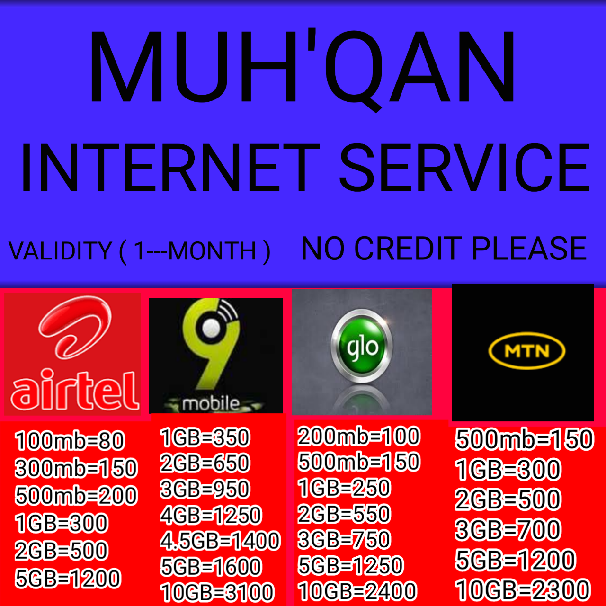
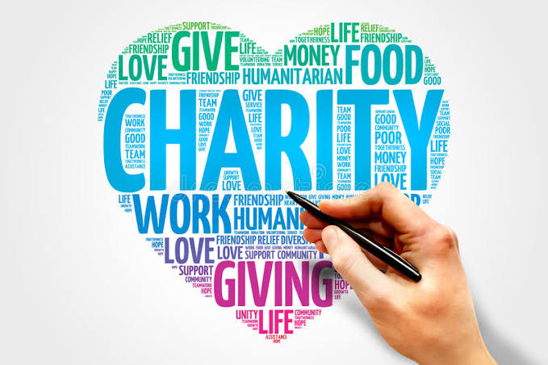

MUH'QAN STUDIO
HOME
Services
About us
MUH'QAN is a highly efficient and Educational websites who help in getting your
RECHARGE CARD/DATA
🛑We work 24/7 at your service getting your data/card without any stress
🛑we are reliable and if you trust us we will get you covered
🛑we charge no fees and it's free and fast
FOR MORE INFORMATION PRESS
THE ICON BELOW

INVESTMENT OPPORTUNITIES
🛑Come and discover how people are making money online just with their smartphone and an internet connection, "Yahoo" is not the only way
🛑you can make massive amount through investment....In my mentorship I will be teaching
🛑How to make money through Affiliate marketing
send and receive of lots of cash
And you will be added to my WhatsApp Master class where you will learn
FOR MORE INFORMATION PRESS
THE ICON BELOW

GRAPHICS DESIGNING
🛑if you're struggling with a design eg Logo, banner, business card, flyer's design and so many more
🛑you are at the right place, because We help in designing of
Business card / flyer's
receipt / invoice
banner designs/ mockup logo design
General design
FOR MORE INFORMATION PRESS
THE ICON BELOW
Religion issue/question
🛑we help in any can of religion problem.
🛑you have questions to ask or something you couldn't exposed to your Guardian/parents.
🛑professionals are here ready to help you out on any kind of thing it might have been.
FOR MORE INFORMATION PRESS
THE ICON BELOW

SPORTS
🛑Get a chance to be the first to check a live sports match and results
🛑It helps in the development of the mental, physical as well as emotional attributes of a person.
🛑It develops qualities of hard work, teamwork, confidence, unity, trust, and team spirit.
🛑It can be indoor or outdoor activities. It reduces the stress level and enhances productivity.
FOR MORE INFORMATION PRESS
THE ICON BELOW
FREE COUPONS
🛑 Stand a chance to win free coupon of data, airtimes even money.
🛑Just share the website links to Five(5) groups.
🛑Send a valid proof of it.
🛑then you received your free coupon
FOR MORE INFORMATION PRESS
THE ICON BELOW
CHARITY
🛑Charity is an act of kindness that can make a huge difference in someone’s life. It is a way of giving back to society and helping those who are less fortunate.
🛑Charity can take many forms. It can be donating money to a worthy cause, volunteering your time at a local shelter or food bank, or simply helping out a neighbor in need. Whatever form it takes, charity is an essential part of our society.
🛑There are many reasons why we should all make an effort to be charitable.
🛑For one thing, it helps us to connect with others and build stronger communities.
🛑When we work together to help those in need, we create a sense of unity and purpose that can be incredibly powerfUL
FOR MORE INFORMATION PRESS
THE ICON BELOW

DONATIONS
WHEN YOU DONATE TO MUH'QAN
🛑You help people learn new skill like coding and others which they can use to provide for theirs families
🛑You help us to creat new resources used to expand and make our work efficient and reliable
FOR MORE INFORMATION PRESS
THE ICON BELOW